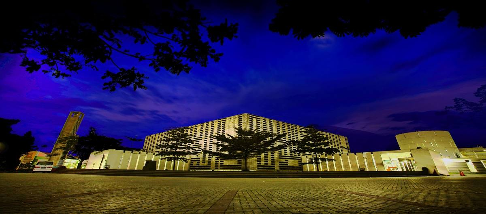
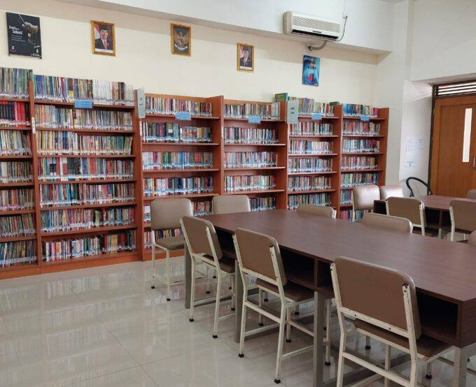

Fasilitas Sekolah
Lingkungan belajar yang dirancang untuk mendorong kreativitas, inovasi, dan keunggulan akademik.

ICT Laboratory
Fasilitas laboratorium komputer modern dengan perangkat berspesifikasi tinggi untuk mendukung pembelajaran coding, desain, dan literasi digital siswa.

Science Laboratory
Laboratorium sains berstandar internasional yang dilengkapi alat peraga mutakhir untuk eksperimen Biologi, Fisika, dan Kimia secara komprehensif.

Masjid Sekolah
Sarana ibadah yang luas, bersih, dan nyaman. Menjadi pusat kegiatan keagamaan untuk membentuk karakter serta spiritualitas Islami siswa.

Perpustakaan Digital
Koleksi 12.000+ buku cetak dan akses digital ke 50.000+ e-book serta jurnal ilmiah internasional.

Fatimah Amphitheatre
Ruang pertunjukan dan pertemuan eksklusif bergaya teater, dirancang khusus untuk mendukung pentas seni, seminar, dan berbagai acara besar sekolah.

Sports Facilities
Fasilitas olahraga komprehensif indoor maupun outdoor untuk mewadahi aktivitas fisik, ekstrakurikuler, dan menjaga kebugaran siswa.